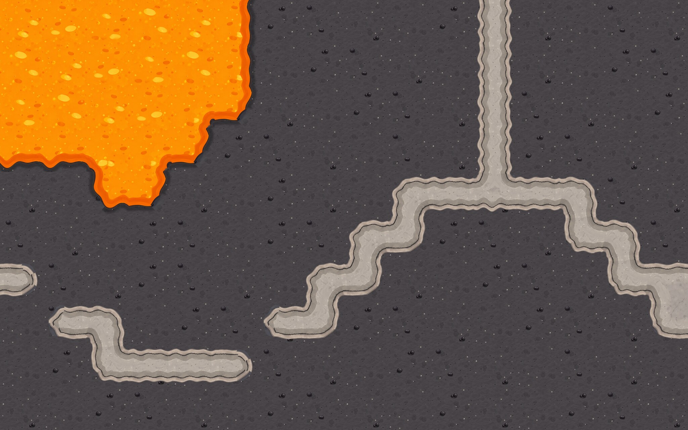
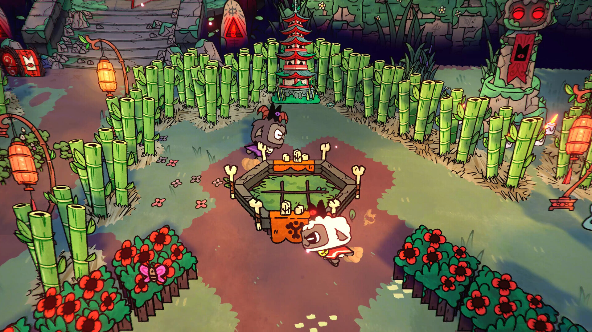
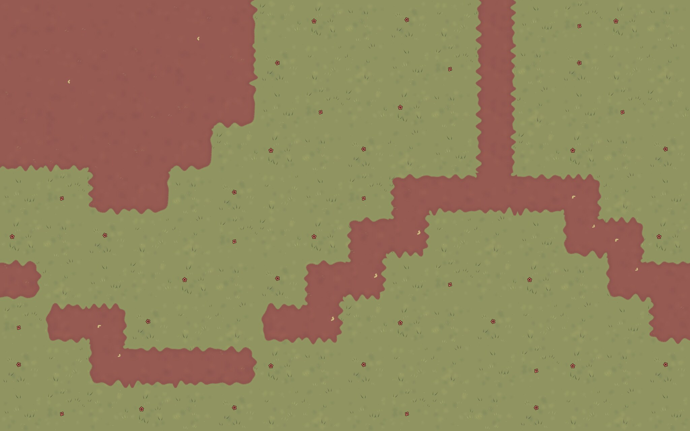
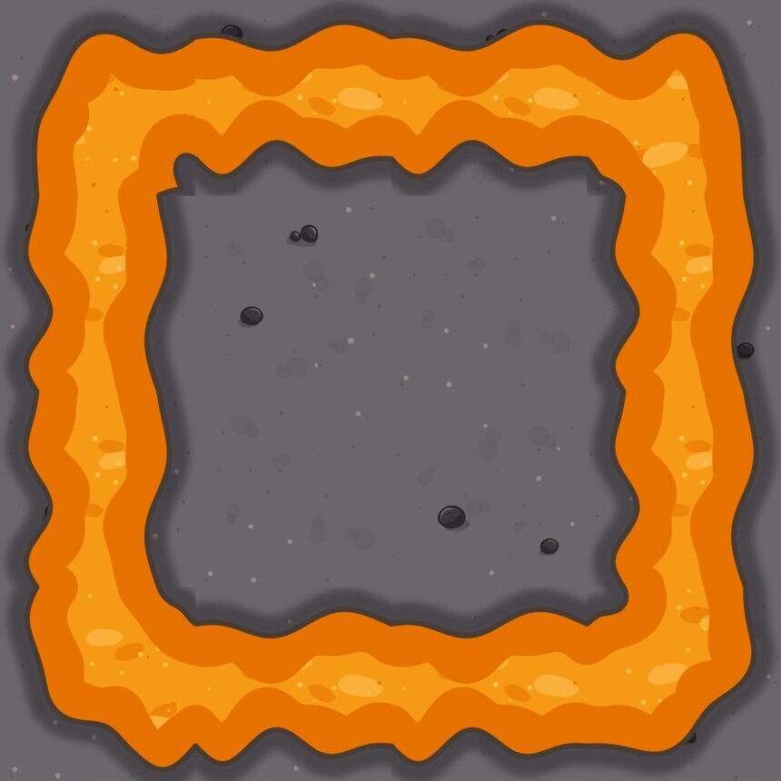
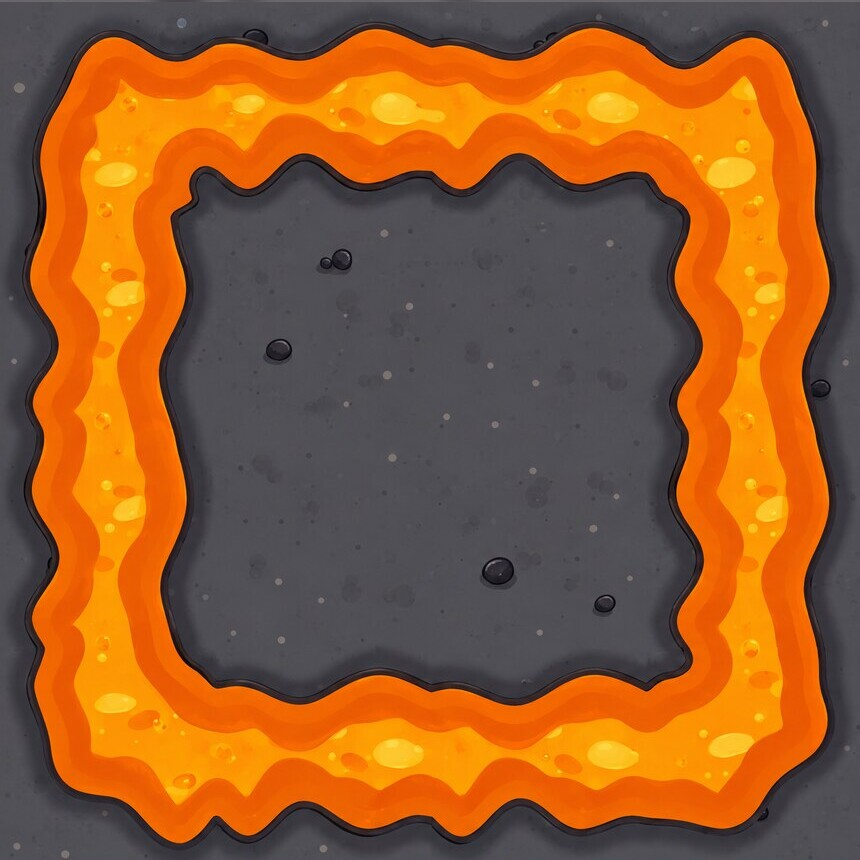
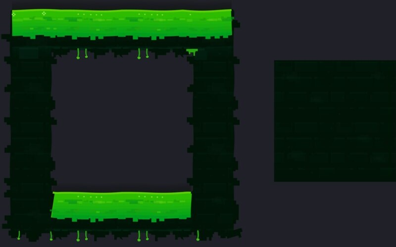
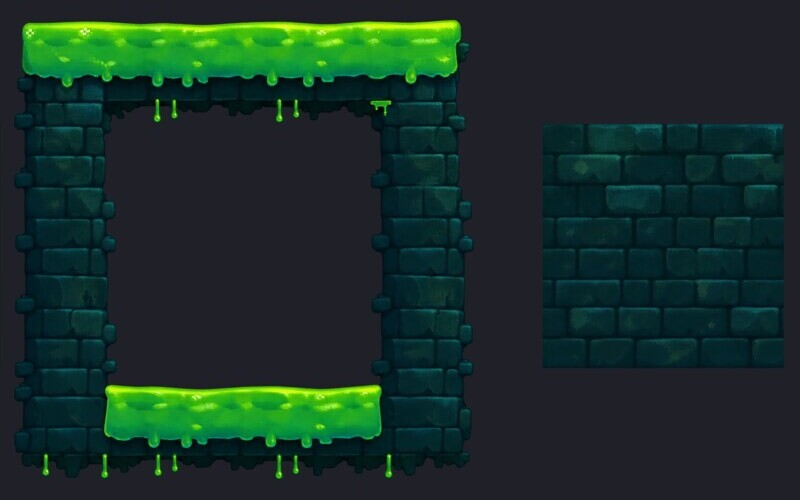
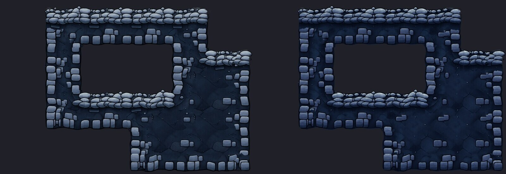
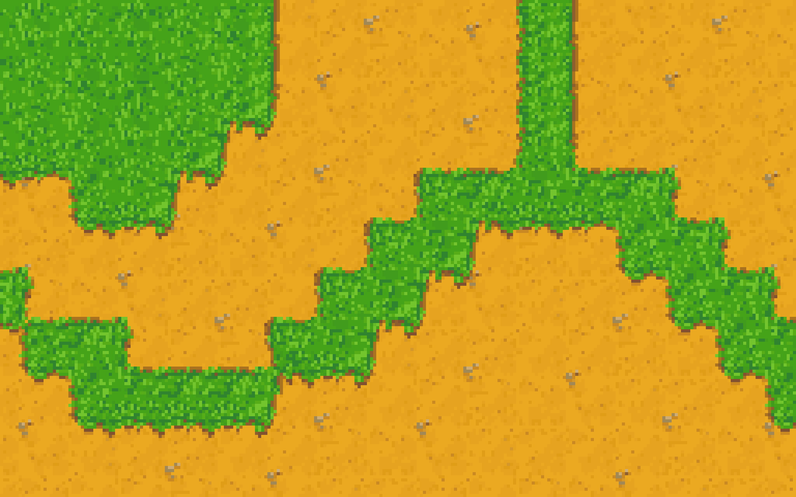
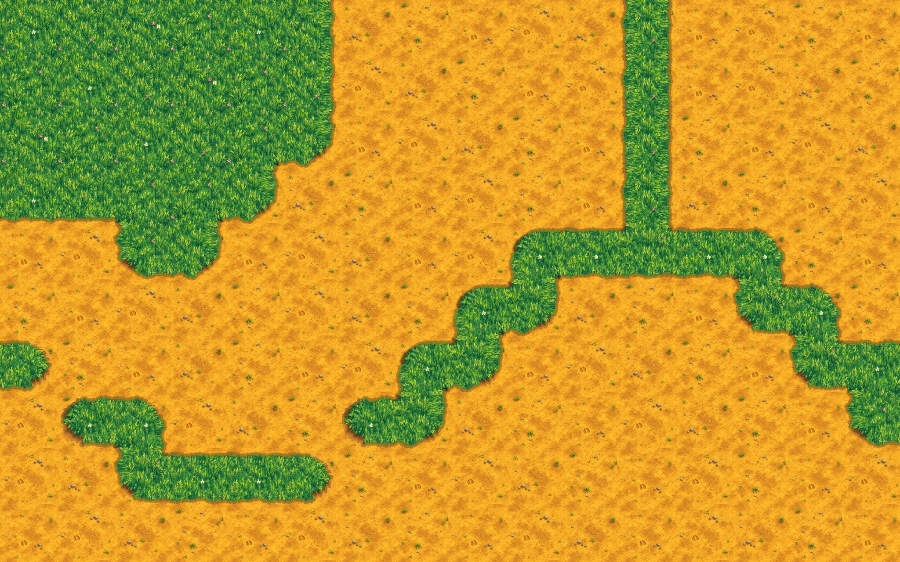

Um print do jogo vira um tileset pronto para pintar mapas.

O screenshot do jogo

Um mapa pintado com os tiles
Bordas, cantos de fora e de dentro: encaixam em qualquer direção.

O molde, desenhado pelo agente

Depois do modelo de imagem

Molde

Acabado

Acabado sem referência
Acabado com o print do jogo como estilo

Pixel art, 16 px por tile

Pintado, em alta resolução
DeepSeek V4.1 Flash, num jogo que a skill nunca viu
63 min
do print ao conjunto entregue, sem ajuda
47
tiles por material, com todas as bordas e cantos
~1 s
para ver cada etapa do desenho
24–63
minutos por conjunto, com o agente sozinho
4
editores: Godot, Tiled, LDtk e Unity
Desenhado por agentes. Acabado por IA. Pronto para o mapa.